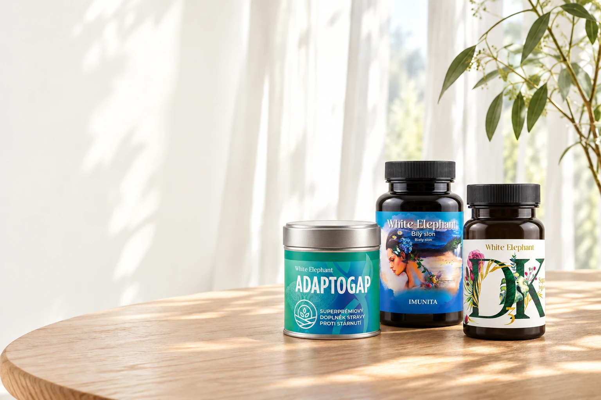
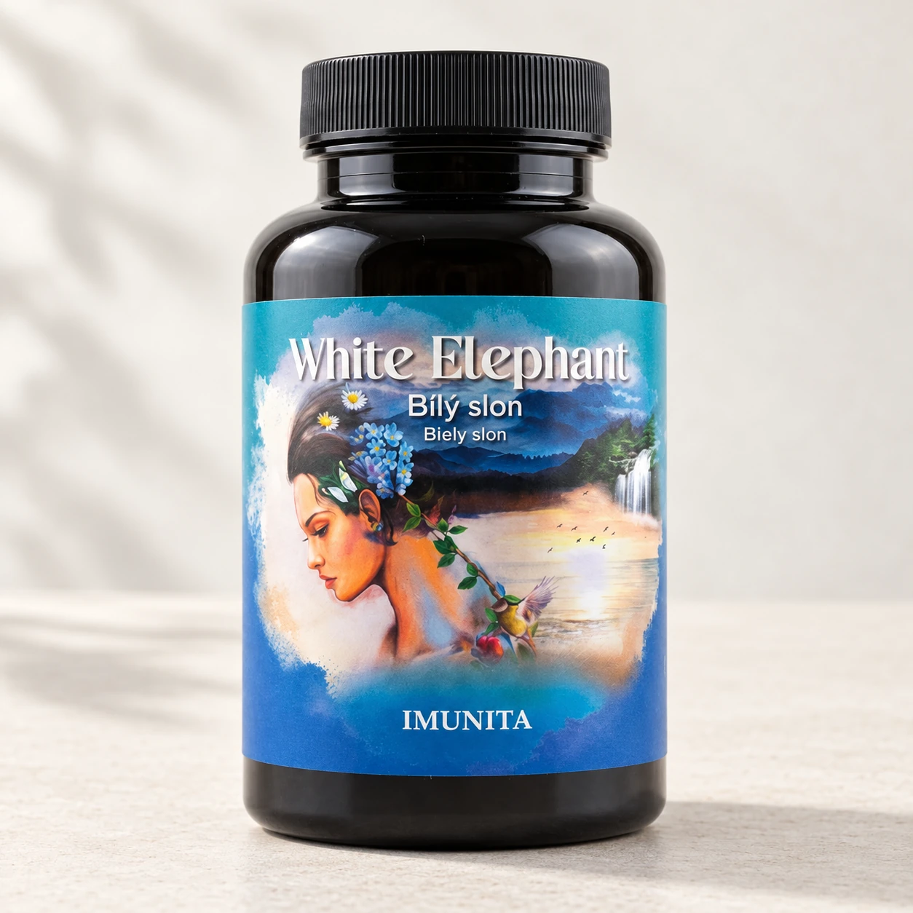

Mijoli spojuje přírodní charakter s přehledným nakupováním. Tento manuál sjednocuje vzhled, chování komponent a způsob, jak ověřovat, zda se lidé v nabídce opravdu vyznají.
26.10.2026UI / UX REVIEW46 PRODUKTŮ V PODKLADOVÉM KATALOGU

Vizuální identita vychází ze skutečných produktů. Produktové fotografie a hero byly vytvořeny pomocí ImageGen s referencemi jejich balení.
01 / VISUAL BRANDING
Rozpoznatelně Mijoli.
Přírodní charakter bez vizuálního hluku. Identita má podpořit informovaný výběr.
01
Klid před tlakem.
Teplý světlý podklad, lesní zelená a měkké tvary. Výrazné plochy a světlo ve fotografiích vytvářejí prostor; vynecháváme naléhavé odpočty a smyšlené důkazy popularity.
02
Produkt je konkrétní.
Zobrazujeme prodávané balení a jeho název. Přednost mají složení, forma, cena a dostupnost. Dekorativní makrofotografie patří do příběhu značky.
03
Jazyk vede dál.
Nadpis může být jemný a osobní. Ovládání musí říci, co udělá: „Prohlédnout produkty“, „Vyhledat“ nebo „Přidat do košíku“. Bez slibů výsledků, které neznáme.
Hlas značky
ÚVOD A PŘÍBĚHMalé návyky. Více prostoru pro sebe.
ORIENTACE A OVLÁDÁNÍ46 produktů. Zúžit výběr podle formy.
STAV A ZPĚTNÁ VAZBAImunita je v košíku. Pokračovat ve výběru.
Pravidla fotografie
Skutečné obaly a etikety se zachováním identity produktu.
Hero má samostatnou širokou, tabletovou a portrétní kompozici.
Text nesmí zakrývat názvy a celý produkt musí zůstat viditelný.
02 / COLORS
Malá paleta. Jasné role.
Zelená nese značku a primární akci. Světlé plochy oddělují obsah. Akcent zvýrazňuje vybraný detail.
#1C3A13
Lesní / Brand--color-brand
Primární text, aktivní volba a hlavní tlačítko.
#FCFCF7
Krémová / Page--surface-page
Základ stránky a světlý text na zelené.
#D3FA99
Jarní / Accent--color-accent
Malé štítky a orientační akcenty.
#EFEFE7
Kámen / Subtle--surface-subtle
Podklad druhotných bloků a zvolených možností.
#58644F
Sekundární text--text-secondary
Čitelné popisky, doprovodný text a metadata.
#84917A
Ovládací obrys--border-control
Rozpoznatelná hranice formulářových polí.
Vypočtené kontrasty základních barevných dvojic
Dvojice
Poměr
Použití
Lesní / krémová
12,26 : 1
Hlavní text, primární CTA.
Lesní / jarní
10,76 : 1
Štítky a akcentové plochy.
Sekundární text / krémová
6,09 : 1
Popisky a doprovodný text.
Sekundární text / kámen
5,42 : 1
Text v informačních panelech.
Ovládací obrys / krémová
3,23 : 1
Hranice polí; nikoli drobný text.
Poměry jsou vypočtené pro uvedené neprůhledné barvy. Nejsou výsledkem kompletního auditu přístupnosti. Jemná linka #DFE3D8 slouží jako dekorativní předěl, ne jako jediný identifikátor ovládání.
03 / TYPOGRAPHY
Velkorysý nadpis. Čitelný nákup.
Inter pro obsah a ovládání. IBM Plex Mono pouze pro krátké orientační štítky.
INTER / 350 — 600
Váš rituál. Vaše vlastní forma.
Pečlivý výběr začíná informacemi, které se dají pohodlně přečíst. Velikost obrazovky nesmí rozhodovat o tom, zda uvidíte cenu, balení nebo dostupnost.
Role
Velikost / váha
Ukázka
Display
36–64 px / 350
Prostor pro sebe.
Nadpis sekce
32–48 px / 350–450
Prohlédnout výběr
Název produktu
20–28 px / 450
Imunita
Obsah a input
16 px / 400
Co je uvnitř a jak se užívá.
Popisek / tlačítko
14 px / 450–500
Přidat do košíku
Metadata
12 px / 400–500
60 tobolek · Skladem
Orientační štítek
11–12 px / Mono 400
MIJOLI / KAŽDÝ DEN
Nákupní informace se na mobilu nezmenšují na 8–10 px. U dlouhých textů držíme řádkování 1,65–1,8 a délku řádku přibližně 45–75 znaků. Nadpisy mají těsnější proklad; formuláře a cena mají pevnou, snadno rozpoznatelnou hierarchii.
04 / SPACING & LAYOUT
Prostor má rytmus.
Odstupy se odvozují od 4 px. Hustota se mění s obsahem; velikost dotykového ovládání zůstává.
Minimum doporučené pro ikonová tlačítka. Hlavní akce a formuláře mají výšku 48 px.
12 / 20 / 24 / PILL
Rohy podle role
12 px pole, 20 px karta, 24 px dialog, plný oblouk u tlačítek a štítků.
160–280 MS
Pohyb se zpětnou vazbou
Jemná změna stavu a otevření dialogu. Volba reduced-motion vypne animace a plynulé scrollování.
05 / ORIGINAL ICONOGRAPHY
Jedna rodina. Jasný význam.
Originální Mijoli SVG sada. Žádné emoji, jednotný tah a zaoblené konce.
16 px
20 px
24 px
32 px
40 px
Výchozí grid 24 × 24, tah 1,6 px. Dekorativní SVG má aria-hidden; ikonové tlačítko má textový aria-label. Směrové ikony v obchodě používají inline SVG path, aby je mobilní systém nepřeváděl na emoji. Ikona doplňuje text stavu; dostupnost není sdělena jen barvou.
06 / COMPONENTS & STATES
Stejná akce. Stejné chování.
Ukázky níže jsou interaktivní pouze v rámci manuálu. Nemění skutečný košík a nic neodesílají.
BUTTON / DEFAULT · SECONDARY · DISABLED
Ukázkový košík je prázdný.
Hover, stisk, focus a disabled tvoří součást komponenty. Jedna hlavní akce v kontextu; disabled stav obsahuje čitelný důvod.
SELECTION / RADIO · CHECKBOX
Stav vždy vyjádří také text nebo nativní ovládání. Při chybě vysvětlíme, co je potřeba opravit.

KAPSLE & TOBOLKY
Imunita
60 tobolek / 30–60 denních dávek
899 Kč Skladem
Hierarchie karty: forma → název → balení → cena a dostupnost → akce. Nákupní informace mají přednost před dekorací.
Komponenta
Povinné stavy
Pravidlo
Produkt / katalog
Načítání, výsledek, prázdno, chyba, nedostupnost
Prázdný výsledek nabízí zrušení omezení; chyba cestu k obnovení.
Vyhledávání
Prázdný dotaz, výsledky, nenalezeno
Čitelný počet, přesná vazba na dotaz a zachování kontextu po návratu.
Detail
Skladem, nedostupný, oblíbený, přidaný
Užívání a upozornění jsou dostupné před rozhodnutím.
Košík
Prázdný, naplněný, upravené množství
Přepočítat mezisoučet a zachovat focus při změně.
Dialog
Otevřený, vnitřní scroll, zavření
Klávesnice zůstává v dialogu; Escape a zavření vrací do kontextu.
Checkout náhledu
Údaje, chyba, doprava/platba, souhrn, dokončeno
Ve všech krocích jasně říci, že se nic neodesílá a neplatí.
07 / INFORMATION ARCHITECTURE
Od nabídky k rozhodnutí.
Hlavní nákupní cesta musí být dostupná bez dlouhého čtení příběhu značky.
Mapa obsahu
ÚvodHodnota značky · skutečné produkty · vstup do katalogu.
ProduktyVyhledávání · forma · sklad · řazení · mřížka / velké karty.
Detail produktuNázev · balení · cena · sklad · složení · užívání · upozornění.
UloženéVlastní výběr produktů pro pozdější návrat.
Košík a ukázková objednávkaMnožství · mezisoučet · tři kroky náhledu.
Přístup, rituál a pomocPodpůrný obsah · FAQ · kontakt · informace o náhledu.
Pravidla orientace
Kategorie odpovídají skutečné formě produktů v katalogu. Další péče má vlastní cestu.
Počet produktů vyjadřuje aktuální kombinaci filtrů a dotazu.
Aktivní omezení lze rozpoznat i zrušit bez opětovného otevření dialogu.
Řazení nemění výběr kategorie a filtry nemažou dotaz bez zjevného důvodu.
Návrat z detailu zachová hledání, kategorii i prohlížené místo.
Mobilní navigace používá textové popisky vedle ikon; stav odpovídá skutečně prohlížené části.
Tato pravidla jsou produktové zadání a akceptační základ. Skutečné splnění se ověřuje v náhledu a testovacích scénářích.
Cesta A / Vím, co hledám
VyhledatNázev, značka nebo složka. Dotaz zůstává viditelný.
Porovnat výsledekBalení, cena a dostupnost bez otevření všech detailů.
Ověřit detailSložení, doporučené užívání a upozornění.
Přidat do košíkuJasná odezva a volba pokračovat nebo otevřít košík.
Cesta B / Teprve vybírám
Zvolit formuKatalog nebo krátký průvodce bez zdravotní diagnózy.
Zúžit nabídkuSkladem a cenové řazení, aktivní filtry na očích.
Uložit a poznatOblíbené pro vlastní výběr a srovnání.
Rozhodnout seDetail a košík; možnost vrátit se ke stejnému výběru.
Cesta C / Dokončení náhledu
Zkontrolovat košíkZměna množství a odebrání, okamžitý přepočet.
Vyplnit smyšlené údajeViditelné popisky a konkrétní validace.
Doprava a souhrnUkázkové varianty, úplný součet před dokončením.
Dokončit ukázkuVýslovně potvrdit, že nevznikla objednávka ani platba.
08 / UX RESEARCH & STRATEGY
Co víme. Co potřebujeme ověřit.
Cíl: lidé najdou vhodný produktový záznam a rozumějí podmínkám svého rozhodnutí.
Bez smyšleného uživatelského výzkumu.Tento dokument vychází z revize zdrojového kódu a katalogu. Nemáme rozhovory, analytiku ani výsledky testování se zákazníky. Persony, očekávání a cílové metriky níže jsou pracovní hypotézy.
EVIDENCE / KÓD A KATALOG
Ověřitelné podklady
Katalog obsahuje 46 položek: 21 skladem a 25 nedostupných. Kategorie tvoří 36 kapslí, 5 elixírů, 3 superpotraviny a 2 položky další péče; ceny a dostupnost jsou statický snímek zdrojového obchodu.
Produkty mají názvy, značky, balení a informace pro rozhodnutí včetně upozornění.
Rozhraní obsahuje katalog, hledání, průvodce, detail, oblíbené, košík a demo checkout.
Audit v2.1.1 našel drobnou mobilní typografii, slabé obrysy polí, vyhledávání omezené na prvních 8 výsledků a chybějící přímou kategorii Další péče.
Prodávající backend ani skutečné odeslání objednávky nejsou součástí tohoto náhledu.
HYPOTÉZY / POTŘEBA VÝZKUMU
Co ještě neznáme
Zda většina návštěvníků přichází s konkrétním názvem nebo teprve hledá formu.
Jak dobře lidé rozumějí kategoriím a co očekávají pod „Další péčí“.
Jestli větší karty pomáhají rozhodnutí, nebo zpomalují porovnání nabídky.
Které informace o složení a užívání lidé potřebují nejdřív.
Zda je povaha náhledu dostatečně srozumitelná před vstupem do checkoutu.
Strategie v pořadí dopadu
P1 / NAJÍT
Zrychlit orientaci.
Viditelný vstup do nabídky, srozumitelné kategorie a zachovaný kontext vyhledávání. Hypotéza: méně návratů a opakovaných dotazů.
P1 / POROZUMĚT
Zpřehlednit rozhodnutí.
Čitelné balení, cena a dostupnost. Složení, použití a upozornění dostupné před přidáním. Hypotéza: méně nejasností v detailu.
P2 / DOKONČIT
Ponechat kontrolu.
Snadná úprava množství a předvídatelný návrat. Viditelné kroky a jasné označení ukázkové objednávky.
09 / PROTO PERSONAS
Tři situace. Žádné domnělé profily.
Pracovní modely chování, ne výstupy rozhovorů. Neodvozujeme věk, zdravotní stav ani jiné citlivé charakteristiky.
HYPOTÉZA A
Cílený návrat
„ZNÁM NÁZEV A CHCI POKRAČOVAT.“
Situace
Vracím se pro známý produkt z telefonu, často v krátké pauze.
Cíl
Najít správné balení, ověřit sklad a upravit počet kusů.
Potřeba rozhraní
Hledání na očích, přesný název, dostupnost, rychlý košík.
Riziko
Stejný název s jiným balením, ztráta dotazu po zavření detailu.
Jak ověřit
Úkol najít konkrétní položku bez odkazu a dokončit ukázkový košík.
HYPOTÉZA B
Pečlivý první výběr
„CHCI VĚDĚT, CO SI VYBÍRÁM.“
Situace
Nabídku ještě neznám. Chci porovnat formu, obsah a doporučené použití.
Cíl
Porozumět produktu a rozhodnout se bez tlaku.
Potřeba rozhraní
Kategorie podle formy, čitelné detaily, uložený vlastní výběr.
Riziko
Obecné „rituální“ texty překryjí konkrétní informace o výrobku.
Jak ověřit
Porovnání dvou dostupných produktů a nalezení užívání i upozornění.
HYPOTÉZA C
Praktický průzkum
„POTŘEBUJI SE RYCHLE ZORIENTOVAT.“
Situace
Nemám konkrétní značku. Prohlížím více možností a rozhoduji se podle ceny a skladu.
Cíl
Zúžit nabídku a vracet se k relevantnímu výběru.
Potřeba rozhraní
Filtry, řazení, počet výsledků, přehledná mřížka.
Riziko
Skryté aktivní filtry nebo nejasný prázdný výsledek.
Jak ověřit
Vyfiltrovat formu skladem, seřadit od ceny, obnovit celý výběr.
10 / USER STORIES & ACCEPTANCE
Přeložit potřebu do chování.
Každá story má pozorovatelnou podmínku přijetí. Jde o zadání pro ověření, nikoli tvrzení o výsledku.
US-01 / KONKRÉTNÍ PRODUKT
Jako vracející se návštěvník chci najít produkt podle názvu, abych ověřil správné balení.
Dotaz funguje s diakritikou i bez ní a ve více slovech; hledá název, značku a dostupné složení.
Výsledek ukáže název, balení, cenu a textovou dostupnost.
Po zavření detailu zůstane dotaz a kontext výsledků zachovaný.
Všechny odpovídající položky jsou dosažitelné, i když výsledků je více než osm. Pokud nic neodpovídá, dostanu konkrétní návrh dalšího kroku.
US-02 / ZÚŽENÍ NABÍDKY
Jako první návštěvník chci filtrovat podle formy a skladu, abych porovnával použitelné možnosti.
Všechny kategorie zastoupené v katalogu mají dostupnou cestu.
Aktivní kategorie a sklad jsou vizuálně i textově rozeznatelné.
Počet a seznam odpovídají stejné kombinaci omezení.
Jednou srozumitelnou akcí mohu zrušit omezení a vrátit celý výběr.
US-03 / INFORMOVANÉ ROZHODNUTÍ
Jako pečlivý návštěvník chci před přidáním přečíst složení a upozornění.
Detail obsahuje dostupné složení, použití, upozornění a skladování.
Akordeony jsou ovladatelné dotykem i klávesnicí.
Mobilní nákupní lišta nezakrývá poslední obsah a respektuje bezpečné okraje zařízení.
Nedostupný produkt nejde přidat a důvod je uveden textem.
US-04 / VLASTNÍ VÝBĚR
Jako porovnávající návštěvník chci produkty uložit, abych se k nim později vrátil.
Tlačítko oblíbených mění aria-pressed a srozumitelný popisek.
Uložené položky jsou dostupné z navigace a přetrvají obnovení stránky, pokud prohlížeč povoluje úložiště.
Prázdný stav vysvětluje, jak produkt uložit.
US-05 / KONTROLA KOŠÍKU
Jako nakupující chci změnit množství a zkontrolovat součet před dalším krokem.
Po změně se přepočítá řádek, počet kusů i mezisoučet.
Ovládací cíle množství jsou pohodlně dosažitelné a dostatečně velké.
Po aktualizaci zůstává klávesový focus na relevantním ovládání.
Přechod do ukázkové objednávky zřetelně sděluje její nezávaznou povahu.
US-06 / PŘEDVÍDATELNÝ NÁHLED
Jako hodnotící návštěvník chci projít objednávku a vědět, zda se něco odeslalo.
Vstupy mají viditelné popisky a konkrétní chyby formátu.
Návrat o krok zachová dříve zadané údaje a zvolenou dopravu/platbu.
Souhrn uvádí položky, dopravu a celý ukázkový součet před dokončením.
Dokončení jasně potvrdí, že nevznikla objednávka ani platba.
11 / USER TESTING PLAN
Ověřit v ruce. Poslouchat při výběru.
Navržený první cyklus: 5 účastníků, moderované testy po 30–40 minutách. Zatím neprovedeno.
NÁBOR / 5 ÚČASTNÍKŮ
Různé nákupní situace.
2 lidé, kteří běžně hledají známý produkt podle názvu.
2 lidé, kteří s podobným sortimentem začínají a porovnávají informace.
1 člověk, který vybírá hlavně podle ceny a dostupnosti.
Test na vlastních telefonech; alespoň dva různé systémy/velikosti obrazovky. Klávesovou průchodnost ověřit zvlášť.
Nábor podle chování, nikoli diagnózy. Není potřeba sbírat zdravotní údaje. Účastník použije při checkoutu smyšlené údaje.
PRŮBĚH / PŘED A PO ÚKOLU
Nechat jednat.
Krátce zjistit způsob běžného online výběru; nevysvětlovat navigaci.
Zadat situaci, ne názvy tlačítek. Požádat o přemýšlení nahlas.
Zaznamenat dokončení, návraty, chyby a potřebnou pomoc.
Po každém úkolu ohodnotit obtížnost na škále 1–7.
Na závěr ověřit porozumění náhledu a prioritizovat překážky.
Scénáře pro moderaci
T01 / Najít konkrétní produkt
Zadání: Chcete si prohlédnout Imunitu od White Elephant. Najděte ji a zjistěte velikost balení, cenu a dostupnost. Poté zobrazte všechny výsledky pro dotaz „Vitamin“.
Sledujeme první zvolenou cestu, opakované dotazy a orientaci ve výsledcích.
Úspěch: účastník samostatně najde správný produkt a správně přečte všechny tři údaje.
Následná otázka: „Podle čeho poznáte, že jde o správné balení?“
T02 / Zúžit nabídku a vrátit se
Zadání: Prohlédněte si bylinné elixíry, které jsou skladem. Začněte nejlevnějším. Otevřete jeden detail a vraťte se ke svému výběru.
Sledujeme čitelnost filtrů, očekávání řazení a zachování kontextu.
Úspěch: seznam odpovídá zadání; po návratu účastník rozpozná stejný výběr.
Poté požádáme zobrazit všechny produkty a pozorujeme rušení filtrů.
T03 / Přečíst informace před rozhodnutím
Zadání: U vybraného produktu zjistěte, co obsahuje, jak se užívá a jaká má upozornění. Zatím nic nekupujte.
Sledujeme nalezitelnost, přečtení a překrývání obsahu pevnou lištou.
Úspěch: účastník najde všechny tři oblasti bez nápovědy.
Hodnotíme práci s rozhraním, nikoli zdravotní vhodnost výrobku.
T04 / Uložit a upravit košík
Zadání: Uložte si jeden produkt na později. Jiný dostupný produkt přidejte do košíku dvakrát a pak množství snižte na jeden kus.
Sledujeme význam ikon, zpětnou vazbu, velikost ovládání a správný součet.
Úspěch: uložená položka je nalezitelná a košík obsahuje jeden správný kus.
Následná otázka: „Co by podle vás zůstalo po obnovení stránky?“
T05 / Projít nezávaznou ukázku objednávky
Zadání: Se smyšlenými údaji projděte ukázkovou objednávku. Před dokončením zkontrolujte částku a poté popište, co se stalo.
Sledujeme validaci, srozumitelnost kroků a očekávání skutečného nákupu.
Úspěch: účastník projde tok a správně vysvětlí, že nevznikla objednávka ani platba.
Nulová tolerance pro omyl, že byl skutečně proveden nákup; při nejasnosti prioritně upravit copy.
Co měřit
Jak zaznamenat
Cíl prvního cyklu
Dokončení úkolu
Samostatně / s pomocí / nedokončeno
Alespoň 4 z 5 samostatně u hlavních cest.
Porozumění náhledu
Vlastní vysvětlení účastníka
5 z 5 rozumí, že nevzniká objednávka.
Obtížnost
Škála 1–7 po každém úkolu
Medián alespoň 5; podrobněji prozkoumat nízké odpovědi.
Čas a návraty
Pozorování během úkolu
První cyklus vytvoří výchozí hodnotu; nestanovujeme nepodložený časový limit.
Kritické chyby
Chybný produkt, ztráta kontextu, nechtěná akce
Žádná opakující se blokující překážka bez navazující opravy.
Jde o předem navržené rozhodovací prahy, ne dosažené výsledky. Pět účastníků poskytne kvalitativní signály pro iteraci; tento vzorek nereprezentuje celou zákaznickou populaci.
Technická kontrola před výzkumem
Rozhraní a přístupnost
Šířky 320, 390, 768 a 1440 px; bez vodorovného přetékání stránky.
Klávesnice: pořadí focusu, Escape, návrat z dialogu, akordeony a radiové volby.
Zvětšení textu, reduced-motion, formulářové popisky a kontrast konkrétních stavů.
Celý obsah detailu dostupný i s pevnou nákupní lištou.
Nákupní konzistence
Dotaz, filtry, počty a řazení ukazují tentýž výběr.
Součty košíku odpovídají položkám a změnám množství.
Nedostupný produkt nelze přidat; prázdný stav má řešení.
Ukázkový checkout nic neodesílá; používá testovací údaje.
Podklady a stav dokumentu
Zdrojová revize: v2.1.1. Tento manuál je návrh systému a akceptační rámec pro v2.2.0. Kontrola implementace a kvalitativní výzkum se evidují odděleně, aby se doporučení nezaměňovala s ověřenými výsledky.
index.html, app.js, seed.css — rozvržení, komponenty a současné nákupní chování.
products.json — 46 produktových záznamů a dostupné údaje.
icons.svg — originální SVG sada a její jednotná geometrie.
README.md — rozsah náhledu, vydání a omezení katalogového snímku.